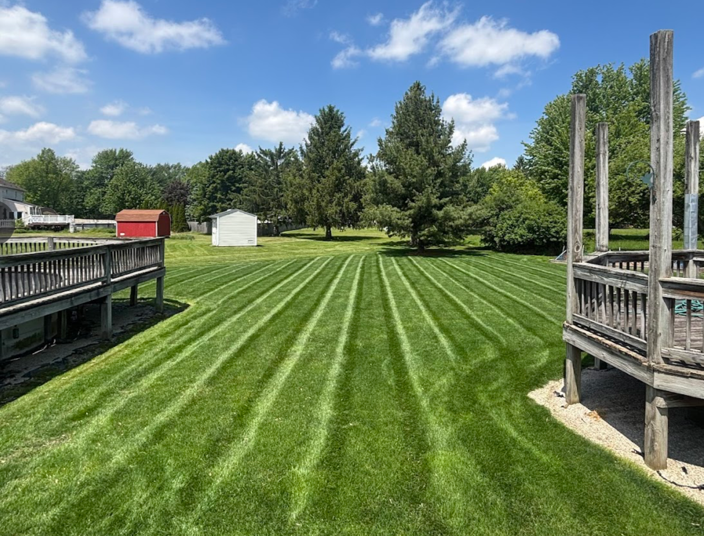
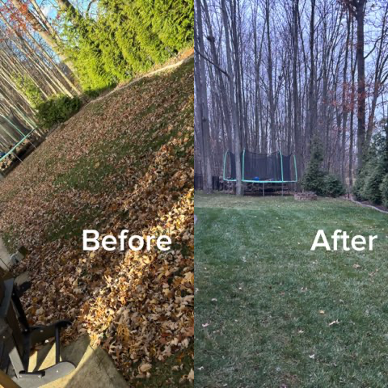

Services
Simple, reliable lawn and landscaping help for homeowners who want their yard to look clean without the hassle.
Editing is on. Click any outlined text, make changes, then click Save Changes.

Lawn Maintenance
Weekly or biweekly mowing, trimming, and blowing off hard surfaces.
MowingTrimming
Mulch Installation
Bed cleanup, fresh mulch installation, and clean edges for better curb appeal.
MulchEdging
Spring/Fall Cleanups
Leaves, weeds, trimming, cleanup, and getting the property back in shape.
LeavesCleanupBed Edging
Sharper bed lines that make landscaping look finished and maintained.
Shrub Trimming
Clean trimming for shrubs and small hedges to keep the property looking neat.
Small Landscape Projects
Planting, bed refreshes, stone, and simple improvements around the home.